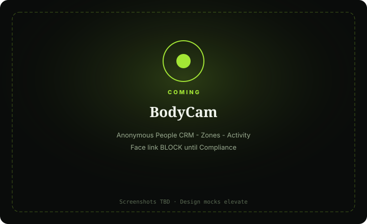

BodyCam
Multi-person pose & zone presence kit — anonymous people, zones, activity events.
For stage, gameplay, and presence ops who need skeletons and zones without face dossiers.

What it does
BodyCam tracks multi-person body pose and zone presence. People are ephemeral anonymous IDs (e.g. P-17) — never faces or names on day one.
Live shows the pose field and zone overlays; People is the anonymous CRM; Zones mark presence regions; Activity captures enter/exit/stillness/fall-hint style events.
Optional gameplay avatar export. Face linkage, if ever, follows QueueCam/Compliance BLOCK rules.
Capabilities
Day-one surface vs Advanced / gated — from Clarity GH Pages pack.
Day-one surface
Live
Day oneMulti-person pose field + zone overlays
People
Day oneAnonymous person instances CRM
Zones
Day onePresence regions / stage marks
Activity
Day oneEnter/exit / stillness / fall-hint events
Advanced / gated
Face / identity link
BLOCKBLOCK until Compliance
Medical fall diagnosis
OutHints only if surfaced
How to use it
First-run (outline)
Add feed(s)
—
Draw at least one zone
—
Catch first person lock
Anonymous ID.
Dry-run activity notify
Enter/exit.
Confirm anonymity
No-face default in Features.
Daily loop (outline)
Watch Live
Pose + zones.
Review People
Ephemeral IDs only.
Tune zones / activity
After dry-run.
Optional avatar/OSC
—
Skim Log
Faults — not sleeping.
Honesty / trust
Anonymous people; face link BLOCK.
- Default anonymous — P-IDs, never faces/names.
- Face features → Compliance BLOCK until cleared.
- Stay in-scope: pose/presence/zones only.
- Fall/stillness = event hints, not medical diagnosis.
- Refuse stick-figures-only UI without Zones + People + activity.
Screenshots
Screenshots TBD from Design mocks — capture when Design elevates.
Capture when Design elevates
Anonymous people; face link BLOCK
Get started
Stub page — full elevate after Design screenshots. Honesty locks already live.